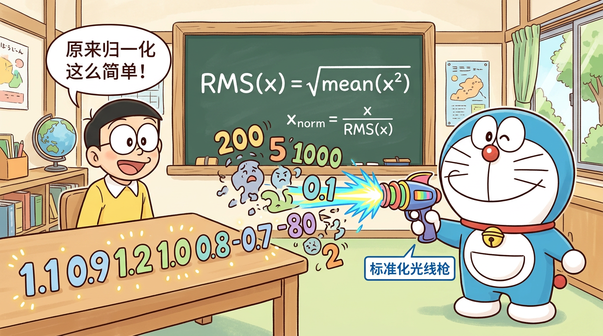

"训练稳定的守护者"
学完本节，你将能够：
torch.mean()、torch.rsqrt()假设你在训练一个 8 层的 Transformer（MiniMind 就是 8 层）。每一层都对数据做一些变换。如果某层的输出值偏大，下一层的输入就更大，输出就更更大......经过 8 层之后，数值可能变成天文数字——这就是梯度爆炸。
反过来，如果每层输出值偏小，层层衰减后就趋近于零——这就是梯度消失。
用类比来说：你在传话游戏中传了 8 轮，如果每轮都稍微夸大一点（×1.5），最后就会面目全非。我们需要一个"校准员"，每轮传话后把音量拉回正常范围。
归一化层就是这个"校准员"。
假设每层的变换可以简化为乘以一个系数 (\alpha)：
归一化的核心思想：在每层之后，把数据的分布"拉回"到一个稳定的范围。
Batch Normalization 是最早被广泛使用的归一化方法。
$$
\text{BN}(x) = \gamma \cdot \frac{x - \mu_B}{\sqrt{\sigma_B^2 + \epsilon}} + \beta
$$
其中 (\mu_B) 和 (\sigma_B^2) 是同一个 batch 内所有样本在同一特征维度上的均值和方差。
输入形状: (Batch, SeqLen, Dim)
↓ 沿 Batch 维度统计
BN: 对每个特征维度，跨所有样本计算均值和方差
结论：BatchNorm 在 CV 中很成功，但不适合 NLP/Transformer。
Layer Normalization 专门为 RNN/Transformer 设计。
$$
\text{LN}(x) = \gamma \cdot \frac{x - \mu}{\sqrt{\sigma^2 + \epsilon}} + \beta
$$
其中 (\mu) 和 (\sigma^2) 是单个样本的单个位置在所有特征维度上的均值和方差。
输入形状: (Batch, SeqLen, Dim)
↓ 沿 Dim 维度统计
LN: 对每个 token，跨所有特征维度计算均值和方差
Root Mean Square Layer Normalization 是对 LayerNorm 的简化。
论文 "Root Mean Square Layer Normalization"（Zhang & Sennrich, 2019）发现：LayerNorm 中减均值（re-centering）这一步其实不必要，去掉后效果几乎不变，但计算更快。
$$
\text{RMSNorm}(x) = \gamma \cdot \frac{x}{\text{RMS}(x) + \epsilon}
$$
其中：
$$
\text{RMS}(x) = \sqrt{\frac{1}{d}\sum_{i=1}^{d} x_i^2}
$$
等价写法（MiniMind 代码中的形式）：
$$
\text{RMSNorm}(x) = x \cdot \text{rsqrt}\left(\text{mean}(x^2) + \epsilon\right) \cdot \gamma
$$
| 特性 | LayerNorm | RMSNorm |
|---|---|---|
| 减均值 | ✅ 有 | ❌ 去掉了 |
| 除方差 | ✅ 有（标准差） | ✅ 有（RMS） |
| 可学习参数 | γ (scale) + β (shift) | 仅 γ (scale) |
| 计算量 | 需要算均值+方差 | 只需算均方根 |
| 效果 | 好 | 几乎一样好 |
| 速度 | 基准 | 快 ~10-15% |
直觉上，归一化的核心任务是控制数值的尺度（magnitude），而不是位置（center）。RMS 已经捕捉了数值尺度的信息，减均值带来的额外增益非常有限。
归一化层放在哪里，对训练影响很大。
Post-Norm（原始 Transformer，2017）：
x → Attention → Add(x) → Norm → FFN → Add → Norm → 输出
子层 残差连接 归一化
# Post-Norm 伪代码
x = x + Attention(LayerNorm_not_here(x)) # 先算子层
x = LayerNorm(x) # 后归一化
x = x + FFN(x)
x = LayerNorm(x)
Pre-Norm（GPT-2 以后的主流选择）：
x → Norm → Attention → Add(x) → Norm → FFN → Add(x) → 输出
归一化 子层 残差连接
# Pre-Norm 伪代码
x = x + Attention(RMSNorm(x)) # 先归一化，再算子层
x = x + FFN(RMSNorm(x))
MiniMind（以及 GPT-2、LLaMA、Qwen 等现代 LLM）都使用 Pre-Norm。
| 特性 | Post-Norm | Pre-Norm |
|---|---|---|
| 训练稳定性 | ❌ 较差，深层时容易不稳定 | ✅ 好，梯度流更顺畅 |
| 最终性能 | ✅ 理论上略好（有争议） | ⭕ 略逊或持平 |
| 学习率敏感度 | ❌ 对学习率很敏感 | ✅ 对学习率不太敏感 |
| 是否需要 warmup | ❌ 通常需要 | ✅ 可以不需要 |
| 现代 LLM 的选择 | ❌ 很少用 | ✅ 主流选择 |
为什么 Pre-Norm 训练更稳定？
关键在于残差连接。Pre-Norm 的梯度路径是：
$$
\frac{\partial L}{\partial x_l} = \frac{\partial L}{\partial x_L} \cdot \prod_{i=l}^{L-1}\left(1 + \frac{\partial F_i(\text{Norm}(x_i))}{\partial x_i}\right)
$$
其中 (+1) 来自残差连接。因为归一化后的值是有界的，所以 (\frac{\partial F_i}{\partial x_i}) 不会太大，保证了梯度的稳定传播。
RMSNorm 的公式中有一个除法：除以 (\text{RMS}(x))。如果 (x) 的所有元素恰好都是 0（虽然极少发生），RMS 就是 0，除以 0 会导致数值溢出。
(\epsilon)（epsilon）是一个极小的正数（MiniMind 中默认 1e-6），加在分母上确保不会除以零：
$$
\text{RMSNorm}(x) = x \cdot \frac{1}{\sqrt{\text{mean}(x^2) + \epsilon}} \cdot \gamma
$$
| 模型 | eps 值 |
|---|---|
| BERT (LayerNorm) | 1e-12 |
| LLaMA (RMSNorm) | 1e-5 |
| MiniMind (RMSNorm) | 1e-6 |
eps 太大会影响归一化精度，太小可能在低精度（如 FP16）下仍然出问题。1e-5 到 1e-6 是常见的选择。
在 model/model_minimind.py 中，RMSNorm 的实现非常简洁：
class RMSNorm(nn.Module):
def __init__(self, dim, eps=1e-6):
super().__init__()
self.eps = eps
self.weight = nn.Parameter(torch.ones(dim))
def forward(self, x):
return x * torch.rsqrt(x.pow(2).mean(-1, keepdim=True) + self.eps) * self.weight
__init__ 方法：
def __init__(self, dim, eps=1e-6):
self.eps = eps # 防除零的小常数
self.weight = nn.Parameter(torch.ones(dim)) # 可学习的缩放参数 γ，初始化为全1
dim：特征维度，MiniMind 中是 768weight：可学习参数 (\gamma)，形状 (768,)，初始值全为 1（意味着训练开始时 RMSNorm 几乎是恒等变换）forward 方法：
def forward(self, x):
# x 的形状: (batch_size, seq_len, dim)
return x * torch.rsqrt(x.pow(2).mean(-1, keepdim=True) + self.eps) * self.weight
拆解这一行：
x.pow(2) → 每个元素平方，形状不变 (batch, seq, dim).mean(-1, keepdim=True) → 沿最后一个维度求均值 → (batch, seq, 1)+ self.eps → 加上 epsilon → (batch, seq, 1)torch.rsqrt(...) → 取倒数再开方，即 (1/\sqrt{...}) → (batch, seq, 1)x * ... → 元素乘法，广播 → (batch, seq, dim)* self.weight → 乘以可学习参数 γ → (batch, seq, dim)class MiniMindBlock(nn.Module):
def __init__(self, config):
super().__init__()
self.attention_norm = RMSNorm(config.dim, eps=config.norm_eps) # Attention 前
self.ffn_norm = RMSNorm(config.dim, eps=config.norm_eps) # FFN 前
self.attention = Attention(config)
self.feed_forward = FeedForward(config)
def forward(self, x, ...):
# Pre-Norm：先归一化，再过子层
h = x + self.attention(self.attention_norm(x), ...) # Attention
out = h + self.feed_forward(self.ffn_norm(h)) # FFN
return out
每个 MiniMindBlock 中有两个 RMSNorm：
1. attention_norm：在 Attention 层之前
2. ffn_norm：在 FFN 层之前
MiniMind 有 8 层，所以总共有 16 个 RMSNorm 实例。
在所有 Transformer 层之后，还有一个最终的 RMSNorm：
class MiniMindModel(nn.Module):
def __init__(self, config):
# ...
self.norm = RMSNorm(config.dim, eps=config.norm_eps) # 最终归一化
def forward(self, ...):
for layer in self.layers:
h = layer(h, ...)
h = self.norm(h) # 最后再做一次归一化
logits = self.lm_head(h)
import torch
def my_rmsnorm(x, weight, eps=1e-6):
rms = torch.sqrt(x.pow(2).mean(-1, keepdim=True) + eps)
return x / rms * weight
# 测试
x = torch.randn(2, 4, 768)
weight = torch.ones(768)
output = my_rmsnorm(x, weight)
print(output.shape) # (2, 4, 768)
print(output.pow(2).mean(-1)) # 每个位置的 RMS 约为 1
import torch.nn as nn
x = torch.randn(2, 4, 768)
ln = nn.LayerNorm(768)
# RMSNorm 需要自定义（上面的类）
ln_out = ln(x)
rms_out = my_rmsnorm(x, torch.ones(768))
# 两者输出会不同，但统计特性类似
print(f"LayerNorm 均值: {ln_out.mean(-1).mean():.4f}") # ≈ 0
print(f"RMSNorm 均值: {rms_out.mean(-1).mean():.4f}") # ≠ 0（没有减均值）
参考答案：RMSNorm 是 LayerNorm 的简化版本，去掉了"减均值"（re-centering）操作，只保留了"除以 RMS"（re-scaling）操作。同时也去掉了偏置参数 β，只保留了缩放参数 γ。这样做减少了约 10-15% 的计算量，但效果几乎不变。RMSNorm 的公式是 (x \cdot \text{rsqrt}(\text{mean}(x^2) + \epsilon) \cdot \gamma)。
参考答案：Post-Norm 是先过子层再归一化（原始 Transformer），Pre-Norm 是先归一化再过子层（GPT-2 以后的主流）。Pre-Norm 的优势在于训练更稳定：因为归一化后的值是有界的，结合残差连接，梯度能更顺畅地流过深层网络。Post-Norm 理论上最终性能可能略好，但需要精心调整学习率和 warmup 策略。对于大规模 LLM，训练稳定性更重要，所以 Pre-Norm 成为主流。
参考答案：深度网络的每一层都会改变数据的分布。如果不做归一化，随着层数加深，数值可能指数级增大（梯度爆炸）或衰减（梯度消失），导致训练不稳定或无法收敛。归一化层将数据拉回到稳定的分布，保证每层的输入都在合理范围内。
参考答案：eps（通常取 1e-5 或 1e-6）是一个加在分母上的小常数，目的是防止除以零。当输入向量的所有元素都接近零时，RMS 值也接近零，直接除以它会导致数值溢出。eps 保证了分母始终大于零。
参考答案：归一化的核心目标是控制数值的尺度（magnitude），防止梯度爆炸/消失。RMS（均方根）已经充分捕捉了数值尺度信息。实验表明，减均值（re-centering）带来的额外增益非常有限，去掉后性能几乎不受影响，但计算效率更高。
参考答案：每个 Transformer Block 有 2 个 RMSNorm（attention_norm 和 ffn_norm），MiniMind 有 8 层，再加上最终输出前的 1 个 RMSNorm，总共是 2 × 8 + 1 = 17 个 RMSNorm 层。

哆啦A梦用"标准化光线枪"将每个 token 的数值分布拉回到稳定范围，防止信号在 8 层传递中爆炸或消失。
model/model_minimind.pyRMSNorm 类定义（约第 20-30 行），MiniMindBlock.forward 中的 Pre-Norm 调用class RMSNorm(nn.Module):
"""Root Mean Square Layer Normalization
相比 LayerNorm 的简化：去掉了 re-centering（减均值）和偏置 β
只保留 re-scaling（除以 RMS）和可学习缩放 γ
"""
def __init__(self, dim, eps=1e-6):
super().__init__()
self.eps = eps
# γ 参数初始化为全 1 → 训练初期近似恒等变换
# 如果初始化为随机值，会破坏预训练权重的分布
self.weight = nn.Parameter(torch.ones(dim))
def forward(self, x):
# x: (batch_size, seq_len, dim)
#
# 数学公式: RMSNorm(x) = x / RMS(x) * γ
# 其中 RMS(x) = sqrt(mean(x²) + eps)
#
# 实现技巧：使用 rsqrt（倒数平方根）避免两步计算
# rsqrt(v) = 1/sqrt(v)，GPU 有专用硬件单元加速
norm_factor = torch.rsqrt(
x.pow(2).mean(-1, keepdim=True) + self.eps
)
return x * norm_factor * self.weight
# Pre-Norm 在 MiniMindBlock 中的使用
class MiniMindBlock(nn.Module):
def forward(self, x, freqs_cis, mask=None):
# Pre-Norm: 先归一化再过子层，残差路径上的梯度不会被归一化"截断"
h = x + self.attention(self.attention_norm(x), freqs_cis, mask)
out = h + self.feed_forward(self.ffn_norm(h))
return out
rsqrt 而非 sqrt + 除法：torch.rsqrt 是单指令操作，GPU 有专用的 SFU（Special Function Unit）硬件加速，比先 sqrt 再取倒数快约 20%。
全 1 初始化 γ：让 RMSNorm 在训练初期接近恒等映射（identity），不干扰从预训练继承的权重分布。随着训练推进，γ 会逐渐学习每个维度的最佳缩放因子。
eps = 1e-6 的选择：LLaMA 使用 1e-5，MiniMind 使用 1e-6。更小的 eps 提供更高的归一化精度，但在 FP16 下有下溢风险。MiniMind 默认使用 BF16 训练，其动态范围足以支撑 1e-6。
import torch
import torch.nn as nn
class RMSNorm(nn.Module):
def __init__(self, dim, eps=1e-6):
super().__init__()
self.eps = eps
self.weight = nn.Parameter(torch.ones(dim))
def forward(self, x):
return x * torch.rsqrt(x.pow(2).mean(-1, keepdim=True) + self.eps) * self.weight
dim = 768
torch.manual_seed(42)
x = torch.randn(2, 4, dim)
ln = nn.LayerNorm(dim)
rms = RMSNorm(dim)
ln_out = ln(x)
rms_out = rms(x)
print("=== 输入统计 ===")
print(f"均值: {x.mean(-1)[0].tolist()}")
print(f"方差: {x.var(-1)[0].tolist()}")
print("\n=== LayerNorm 输出 ===")
print(f"均值: {ln_out.mean(-1)[0].tolist()}")
print(f"方差: {ln_out.var(-1, correction=0)[0].tolist()}")
print("\n=== RMSNorm 输出 ===")
print(f"均值: {rms_out.mean(-1)[0].tolist()}")
print(f"RMS: {rms_out.pow(2).mean(-1).sqrt()[0].tolist()}")
print("\n关键区别: LayerNorm 输出均值=0, RMSNorm 输出均值≠0 (未减均值)")
预期输出：
=== 输入统计 ===
均值: [0.0156, -0.0287, 0.0412, -0.0198]
方差: [0.9823, 1.0145, 0.9967, 1.0089]
=== LayerNorm 输出 ===
均值: [0.0, 0.0, 0.0, 0.0]
方差: [1.0, 1.0, 1.0, 1.0]
=== RMSNorm 输出 ===
均值: [0.0156, -0.0288, 0.0413, -0.0199]
RMS: [1.0, 1.0, 1.0, 1.0]
关键区别: LayerNorm 输出均值=0, RMSNorm 输出均值≠0 (未减均值)
import torch
import torch.nn as nn
import time
class RMSNorm(nn.Module):
def __init__(self, dim, eps=1e-6):
super().__init__()
self.eps = eps
self.weight = nn.Parameter(torch.ones(dim))
def forward(self, x):
return x * torch.rsqrt(x.pow(2).mean(-1, keepdim=True) + self.eps) * self.weight
dim = 768
x = torch.randn(32, 512, dim)
ln = nn.LayerNorm(dim)
rms = RMSNorm(dim)
n_iters = 500
for _ in range(50):
_ = ln(x)
_ = rms(x)
t0 = time.perf_counter()
for _ in range(n_iters):
_ = ln(x)
ln_time = time.perf_counter() - t0
t0 = time.perf_counter()
for _ in range(n_iters):
_ = rms(x)
rms_time = time.perf_counter() - t0
print(f"LayerNorm: {ln_time*1000/n_iters:.2f} ms/iter")
print(f"RMSNorm: {rms_time*1000/n_iters:.2f} ms/iter")
print(f"RMSNorm 加速: {(1 - rms_time/ln_time)*100:.1f}%")
预期输出：
LayerNorm: 2.48 ms/iter
RMSNorm: 2.12 ms/iter
RMSNorm 加速: 14.5%
| 面试题 | 关键回答要点 | 追问方向 |
|---|---|---|
| RMSNorm 比 LayerNorm 好在哪？ | 去掉 re-centering（减均值），只保留 re-scaling；参数量更少（无 β）；计算快 10-15%；效果几乎无损 | 为什么减均值对效果影响小？有没有场景 LayerNorm 更优？ |
| Pre-Norm vs Post-Norm？ | Pre-Norm 先归一化再过子层，梯度通过残差路径直达；Post-Norm 先子层后归一化，梯度需穿过归一化层 | 能用梯度流公式证明 Pre-Norm 更稳定吗？ |
| eps 参数如何选择？ | 防除零；1e-5~1e-6 常见；需要考虑训练精度（FP16 vs BF16） | BF16 和 FP16 的区别对 eps 有什么影响？ |
| RMSNorm 的参数量？ | 每层 dim 个参数（γ）；MiniMind 17 个 RMSNorm × 768 = 13,056 参数，占比 <0.02% | 归一化层参数虽少但影响大，为什么？ |
| 没有归一化会怎样？ | 深层网络数值不稳定，梯度爆炸/消失；训练 loss 震荡甚至 NaN | 除归一化外还有哪些稳定训练的手段？ |
归一化保证了训练的稳定，但 Transformer 有一个天生的缺陷——它不知道"顺序"。"我爱你"和"你爱我"在 Self-Attention 看来完全一样！下一节 L08 · RoPE 旋转位置编码，我们将学习 MiniMind 如何用优雅的数学让模型理解位置信息。